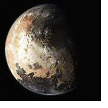

|
Плутон гороскопе
Плутон символизирует коллектив, толпу, народные массы, власть, мощь, насилие, принуждение, преступные акции. Замечено, что Плутон является главным управителем всех народных мистерий: собраний, митингов, демонстраций и других скоплений людей. Вместе с Ураном он разрушает старые, гнилые, уже отжившие политические и государственные мировые структуры и создает новые.
Плутон в знаках Зодиака на своем пути разрушает все себя отжившее, а затем начиная с ноля все возрождает, преобразует и восстанавливает. Знак Зодиака, в котором находится Плутон описывает как происходят эти изменения, сферы жизни, которых перемены коснутся.
Характеристика Плутона в Скорпионе представлена ниже:
Плутон в Скорпионе
Такое расположение планет попадает в 12-летний период, когда рождаются люди, отличающиеся эмоциональной сложностью и глубиной. Данную возрастную группу очаровывают тайны жизни, они совершают невероятные прорывы в понимании жизненных процессов. Это поколение нередко исследует тайну рождения и смерти. Как правило, в период Плутона в Скорпионе совершаются прорывы в понимании поведения животных, сексуальной активности, археологических исследований, исследований океана. За всей этой работой стоит глубокий, неутомимый интерес к таинственному. Этих людей глубоко волнуют секс, власть, оккультизм, гипноз и другие умственные и физические техники и тренировки. Любовь к тайне данной возрастной группы нередко дает новую жизнь романам и фильмам ужасов - они делают ужас предметом моды и стиля. Эта группа эмоционально сложна, и часто людям этой группы свойственно довольно странное поведение. В данной группе высок уровень преступности, насилия и эмоциональных расстройств. Плутон вошел в Скорпион в 1983 году и оставался в этом положении до 1995 года. Перед этим он был здесь в 1737 — 1749 гг. Как известно, в этот период в 18 веке произошло мало значительных событий; не было никаких великих открытий, важных войн или революций. Не возникло также никаких значительных новых течений в искусстве. Единственное, благодаря чему запомнился этот период, это несколько интересных географических открытий — например, открытие Аляски Берингом. Но все же большинство астрологов верит, что повторное вхождение Плутона в Скорпион принесет огромные перемены и нарушения. Это может быть началом настоящей эпохи Водолея и указывать на предстоящий Армагеддон.
|


 Тайна имени
Тайна имени Плутон в знаке Скорпион
Плутон в знаке Скорпион